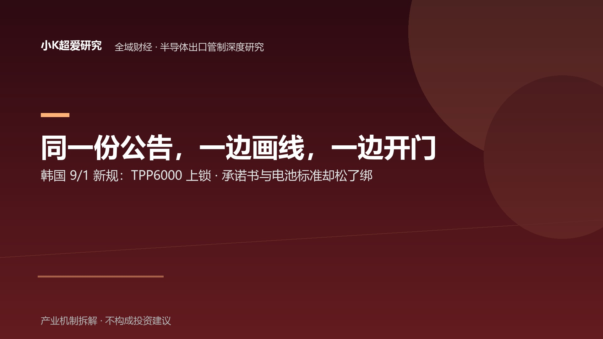

韩国给 AI 芯片画了条线，但同一份公告里，还藏着开门的钥匙
同文件矛盾 × 时间坐标 × 路径升级：一边画线、一边开门，韩国在重新划分出口管制的边界
全域财经 · 半导体出口管制 × 地缘博弈深度研究
2026-09-03
主轴：同文件矛盾（画线 × 开门）× 时间坐标（韩国不是起点）× 路径升级（从“禁什么”到“走哪条路”）｜参照：MOTIR 公告 × 日本经产省 8/1 × BIS 执法｜验证：TPP 跟进节奏 × 许可发放量全文采用【事实】【机制】【推论】【待验证】【证伪】五级标记。事实仅使用可回溯公开来源；涉及调查、起诉中的案件一律标注进度，不写成既成事实。
导语：韩国纳管不是新闻，“同一份公告里为什么一边画线、一边开门”才是
2026 年 9 月 1 日，韩国修订版《战略物资进出口公告》生效。
绝大多数媒体的标题只有一句话：
韩国将高性能 AI 芯片纳入战略物资管制。
【事实：韩国产业通商资源部（MOTIR）2026-09-01 修订版《战略物资进出口公告》，经 Asiae、Aju Daily 等公开报道转述】
但这个标题只讲了公告的一面。
同一份文件里，还出现了另外两项调整：
- 废除出口者承诺书；
- 部分电池能量密度标准由 350 Wh/kg 调整至 500 Wh/kg。
【事实：同次 MOTIR 公告】
把这三件事放在一起，一个绝大多数标题没有追问的问题就出来了：
一个国家为什么一边把 AI 芯片画进管制线，一边又主动降低其他出口环节的合规摩擦？
这不是韩国一国的孤立动作。
把它放进 2026 年下半年的时间轴，会看到更完整的结构：日本比韩国更早落地，美国的执法重心也正在从单纯规定“什么不能卖”，进一步延伸到“通过谁、经过哪里、最终到了谁手里”。
真正发生变化的，可能不是一张清单，而是全球 AI 算力供应链的通行规则。
所以，这篇研究的重点不是“韩国开始管 AI 芯片了”，而是：
韩国究竟在收紧什么，又在主动保留什么？
如果把这场博弈看成一张牌桌：
政策主体掌握的是准入规则；关键产业厂商掌握的是产能、认证与客户；各国供应商真正争夺的，则是自己能否继续坐在对应的牌桌上。
一、先看文件本身：同一份公告，两副面孔
1.1 画线的那半边：TPP≥6000 与先进设备许可制
【事实】
韩国此次修订涉及两类敏感物项：
- 高性能 AI 集成电路：以总处理性能（TPP）6000 及以上作为控制线，达到相应门槛的出口须取得 MOTIR 许可；
- 先进半导体制造设备：特定规格的光刻、刻蚀、沉积设备纳入战略物资管理，出口同样受到许可要求约束。
【机制】
TPP（Total Processing Performance，总处理性能）把芯片处理能力转化为可量化指标。
与逐项列举具体型号相比，性能门槛式管制最大的特点是：
不需要不断更新具体产品名单，只需要调整性能阈值，就可以扩大或缩小监管范围。
因此，韩国这次真正锁定的是：
线以上的高性能算力芯片 + 特定规格的先进制造设备。
这是双用途技术体系中敏感度最高的一层。
1.2 开门的那半边：废除承诺书 + 放宽电池标准
【事实】
与此同时，同一份公告又采取了两个方向相反的动作：
- 废除出口者承诺书：取消出口流程中的一项前置承诺义务；
- 部分电池能量密度标准由 350 Wh/kg 调整至 500 Wh/kg：相关产品的出口监管条件有所放宽。
【机制】
前者意味着合规流程摩擦下降；后者意味着部分产品不再处于此前相同的监管强度。
于是，同一份文件出现了两个方向：
高性能 AI 芯片：向上收紧。
部分其他出口品类：降低摩擦。
这与“全面收紧”并不是同一个政策结构。
1.3 同文件内部结构，才是最值得研究的证据
【推论】
真正值得注意的，不是韩国“管了 AI 芯片”，而是：
韩国在同一份政策文件里，同时重新定义了“什么必须管”和“什么可以放”。
这更接近一次监管边界的重新划分。
可以把它理解为：
把最敏感的性能区间纳入许可制，同时降低其他出口环节的制度摩擦。
因此，真正值得追问的不是：
韩国是不是在收紧出口？
而是：
韩国到底把出口边界重新划到了哪里？
TPP 6000 以上被锁住以后，6000 以下究竟保住了多大的贸易空间？
这才是这份公告真正值得研究的地方。
二、人物坐标：同一个政策制定者，为什么同时押产业、管高端？
2.1 金正官的政策动作序列
【事实】
此次公告由韩国产业通商资源部（MOTIR）发布，公告署名为部长金正官（Minister JK Kim）。
把此次公告与其同期产业政策动作放到同一时间轴上，可以看到另外两条线：
- 2026 年 6 月，MOTIR 推出大规模存储产业投资计划，强调扩大韩国存储产业产能与竞争力；
- 金正官同期多次强调韩国面对中国半导体产业快速追赶的压力。
【事实：MOTIR 官网及公开报道】
这里必须区分两个层次：
“纳管 AI 芯片”是贸易与安全政策动作；“扩大存储投资”是产业政策动作。两者不能简单等同为同一个政策目标。
但把它们放到同一个时间轴上，至少可以确认：
韩国并没有把半导体政策理解成单纯的出口管制问题，而是在同时处理安全合规与产业竞争力。
2.2 “务实留门”不是亲美，也不是对华示好
【推论】
因此，“韩国跟美国交差、同时对中国留门”这个表述仍然过于简单。
更准确的结构是：
韩国需要满足更严格的高端技术管制框架，同时又不能主动损害自身半导体、材料、设备、电池等出口产业的效率。
于是政策出现了三个层次：
高敏感技术 → 提高门槛；
非核心敏感产品 → 降低摩擦；
产业基本盘 → 尽可能维持出口效率。
这也是为什么“同一份公告里的矛盾”，比单独看 TPP 6000 更有研究价值。
2.3 B 面：韩国真正担心的是“两头都丢”
【推论】
韩国面对的并不是一道简单的外交选择题。
一边是美国主导的高端技术出口管制体系；另一边是中国巨大的产业链、消费市场与竞争压力。
如果只写成“韩国向美国靠拢”，就会漏掉一个更重要的约束：
韩国必须在安全合规、产业出口和中国竞争三个变量之间同时保持平衡。
因此，所谓“留门”未必意味着对中国释放善意。
更可能意味着：
在接受高端技术管制的同时，尽可能保住自己的产业现金流与全球贸易空间。
三、时间坐标：韩国不是第一站
3.1 一个月前，日本已经先落地
【事实】
2026 年 8 月 1 日，日本经济产业省修订的《外汇及外贸法》相关半导体设备出口管制结束过渡期并正式生效。
此次修订新增约 20 大类管制物项，并首次将先进封装纳入相关管制范围。
【事实：日本经济产业省相关公告；事件库 104】
一个月之后，韩国落地 TPP≥6000。
3.2 8/1 → 9/1：韩国从孤立事件变成一个节点
【推论】
把两个日期放在一起：
8 月 1 日：日本。
9 月 1 日：韩国。
韩国就不再是一条孤立新闻，而成为更大出口管制框架中的一个执行节点。
这意味着一个重要变化：
多边规则的讨论，正在逐步进入各国国内的具体执行阶段。
而一旦不同国家采用不同性能门槛，就会产生另一个值得长期跟踪的问题：
门槛差异本身，会不会变成新的合规套利空间？
例如，同一类芯片在 A 国需要许可，在 B 国仍处于许可线以下，那么供应链就可能重新寻找出口节点、物流节点和最终用户节点。
【推论：机制推演；具体套利程度待后续各国公告验证】
所以未来真正值得观察的，不只是：
“有没有管制？”
而是：
“各国的门槛是否逐步趋同？”
四、更大的变化在“路径”：BIS 查的越来越不只是货
4.1 同一时间窗里的四条线索
【事实】
把 2026 年 7—8 月美国 BIS 的相关动作放在同一条时间线上：
| 日期 | 事件 | 状态 |
|---|---|---|
| 7/10 | 阿联酋 final rule 生效，对部分先进计算物项及已批准实体调整限制 | 已生效 |
| 8/7—8/11 | BIS 执法部门专项排查中国 AI 企业通过境外第三方渠道获取高端算力的情况 | 调查中 |
| 8/24 | 台湾基隆地检署起诉九人，指控涉及高端 AI 服务器非法出口至中国大陆 | 起诉中 |
| 8/27 | BIS 调查新加坡物流公司 Apex Logistics 是否违反出口管制 | 调查中 |
【事实：事件库 89/97/94/104；彭博社、基隆地检署公告等】
这里必须强调：
后三项属于调查或起诉阶段，不能写成已经被法院认定的事实。
4.2 从“禁什么”到“走哪条路”
【推论】
把这些线索放在一起，会出现一个值得关注的监管变化：
过去的核心问题是：
什么东西不能卖？现在越来越重要的问题是：
东西通过谁、经过哪里、最终到了谁手里？
监管对象开始沿着供应链向下延伸：
芯片 → 数据中心/第三方渠道 → 物流 → 最终用户。
这意味着出口管制的边界，正在从单纯的“商品属性”扩展到“交易路径”。
于是出现一个值得关注的对照：
部分盟友获得规则上的放宽空间，而敏感技术向特定终端用户转移的路径受到更严格审查。
但这里必须保留证据边界。
“门留给盟友、路掐给对手”可以作为机制概括，但目前仍属于基于多起政策与执法动作形成的推论，不能写成美国已经公开宣布的统一战略。
4.3 下一层：监管对象可能继续向上移动
【待验证】
如果后续美国进一步推进所谓“AI 扩散重构框架”，监管对象可能从单纯的芯片出口进一步延伸到：
- 模型；
- 算力服务；
- 数据中心；
- 云服务；
- 最终用户。
如果这一趋势最终成立，那么出口管制的边界将从：
“这颗芯片能不能卖？”
进一步变成：
“谁能获得这颗芯片产生的计算能力？”
这将是比单纯调整 TPP 门槛更深的一次变化。
五、韩国两大存储企业：真正决定利润的，可能不是这张管制清单
5.1 SK 海力士：高端存储的核心卖家
【事实】
SK 海力士是全球 HBM 市场的核心供应商之一，其主要客户包括英伟达等美国 AI 芯片与云计算产业链企业。
公司 2026 年 HBM 产能高度紧张，相关产能订单已经进入提前锁定状态。
【事实：SK 海力士公司公告、财报及公开市场资料】
【推论】
如果从 TPP 6000 的逻辑看，SK 海力士处在高端 AI 算力供应链的重要位置。
但管制对它的直接冲击，并不等于“失去美国市场”。
恰恰相反：
韩国企业真正面对的风险，是高端产品被纳入更严格的合规体系，而其核心客户仍然集中在美国 AI 产业链。
因此，对 SK 海力士而言：
出口管制首先增加的是合规约束，而不是直接切断最核心的美国需求。
真正决定其业绩弹性的，仍然是：
HBM 客户认证 + HBM4 代际竞争 + 有效产能释放。
5.2 三星：真正需要解决的是 HBM 竞争力
【事实】
三星电子 DS 部门由全永铉负责，其公开业务重点长期集中在半导体技术竞争、客户认证以及 HBM 产品竞争力。
【事实：三星电子财报及公司公开资料】
【推论】
如果把三星和 SK 海力士放在一起看，会发现一个有意思的现象：
对韩国两大存储厂商来说，出口管制并不是当前最直接的经营变量。
眼下真正决定市场份额的，是：
- 谁先完成 HBM4 客户认证；
- 谁能稳定量产；
- 谁能扩大有效产能；
- 谁能进入下一代 AI 加速器供应链。
因此：
管制文件改变的是贸易路径与合规成本；客户认证和产能决定的是市场份额。
5.3 但“从容”不等于“安全”
【推论 · B 面】
这里必须保留反向风险。
如果未来美国进一步扩大高端存储器出口限制，或者将更多 HBM 产品纳入针对中国的限制范围，那么韩国厂商将面对一个更直接的问题：
中国市场的重要性，能否被美国 AI 需求完全替代？
对于 SK 海力士而言，答案可能相对更强，因为其 HBM 产能高度紧张、美国 AI 客户占比较高。
对于三星而言，情况更加复杂：
如果 HBM4 竞争力没有明显改善，它在高端市场的份额压力会与出口管制风险叠加。
所以，“韩国企业从容”只能描述当前经营约束，不能被解释成长期安全。
六、为什么必须留门：一个更底层的宏观约束
【事实】
2026 年 8 月 27 日，韩国央行连续第二次会议加息 25 个基点，政策利率升至 3.00%。
【事实：韩国央行决议；事件库 79】
【推论】
单独看这件事，与半导体出口管制没有直接关系。
但把它放入韩国宏观经济结构，可以看到一个更底层的约束：
韩国需要控制通胀与金融条件，同时又高度依赖出口和半导体周期。
因此，韩国没有太多空间主动削弱自己的核心出口产业。
这也是为什么“高端画线、低敏感环节留门”的政策组合具有一定合理性：
安全边界要守，但产业出口效率也不能一起牺牲。
所以，“务实留门”更准确的理解，不是外交姿态，而是：
在安全约束不断提高的情况下，尽可能降低对自身出口引擎的附带损伤。
七、价值捕获：这场“重排”，价值被重新分配给了谁？
【机制】
同一份公告“一手画线、一手开门”，本质上是在给不同类型的贸易活动设置不同的制度价格：
画线收紧的是高敏感技术的自由流动；开门保住的是非核心敏感出口的效率。
因此，谁站在线的哪一侧，决定了谁承担合规成本，谁获得制度红利。
可以用一个简化框架观察：
留门受益度 ∝（线以下可自由出口规模 × 对美合规通道确定性）÷（合规执行成本 × 中国市场敞口）
这不是完整的经济模型，只用于比较不同玩家的位置。
| 玩家 | 线以下盘子 | 对美通道 | 合规成本 | 中国敞口 | 当前影响 |
|---|---|---|---|---|---|
| 美国 | — | 规则制定者 | — | — | 拥有规则解释权 |
| SK 海力士 | 大 | 高 | 上升 | 相对有限 | 当前较强，但依赖美国 AI 需求 |
| 三星 DS | 大 | 高 | 上升 | 中 | 较强，但更脆弱 |
| 一般出口商 | 部分扩大 | 改善 | 下降 | 视品类而定 | 小幅受益 |
| 中国高端买家 | 无 | 受限 | 上升 | 高 | 净承压 |
【推论】
这张表真正想表达的不是“谁赢、谁输”，而是：
这次政策重排没有把所有参与者一起推向同一个方向，而是在不同技术层级之间重新分配了合规成本。
美国获得的是规则解释权。
韩国头部存储企业获得的是：
在接受高端技术管制的同时，继续保留美国 AI 产业链核心客户。
一般出口商获得的是：
部分非敏感产品的制度摩擦下降。
而中国高端买家承担的是：
高性能算力获得渠道进一步收紧。
7.1 两个必须保留的 B 面
【推论】
第一，对韩国企业而言，当前的“从容”依赖一个前提：
美国 AI 需求仍然强，而且美国客户仍然愿意采购韩国高端存储。
如果这一前提改变，韩国企业的风险会迅速上升。
第二，对一般出口商而言：
今天取消承诺书，不意味着未来不会用其他方式重新增加合规要求。
政策边界仍然处于动态调整阶段。
所以，“开门”更准确的含义是：
当前规则下的制度摩擦下降，而不是永久性自由通行。
八、反方情景：如果本文判断错了，会出现什么？
本文的核心判断是：
韩国此次纳管更接近“结构重排”，而不是单纯的全面收紧；同时，这一动作又处在多边规则本地化执行与供应链路径监管加强的大背景下。
因此至少存在两个反向情景。
情景 A：这不是重排，而是真正全面收紧
【待验证】
如果未来出现：
- 韩国出口许可发放量明显下降；
- 对华相关芯片/设备贸易明显收缩；
- 原本处于线以下的产品也被持续纳入更严格许可；
那么“留门”就不能再解释成结构重排，而需要修正为：
阶段性的缓冲，而非长期留门。
情景 B：路径监管只是阶段性执法
【待验证】
如果未来出现：
- 更多盟友国家复制阿联酋式放宽；
- 东南亚转运案件大规模撤案；
- BIS 后续规则重新回到单纯的产品性能门槛；
那么“从商品监管走向路径监管”的判断需要降低权重。
届时，2026 年夏季的一系列执法动作更可能只是：
针对特定违规渠道的集中执法，而不是监管范式发生变化。
九、证伪条件：哪些数据出现，本文就应该被推翻？
本文不要求读者相信结论，而是主动给出验证条件。
① 各国门槛没有趋同
如果未来主要经济体的 AI 芯片管制门槛长期保持明显差异，且没有形成类似 TPP 6000 的趋同标准：
→ “多边门槛逐渐标准化”判断失效。
② 韩国许可发放量没有明显下降
如果 TPP≥6000 生效后，韩国相关出口许可发放量仍然稳定增长，且高端芯片实际出口没有明显下降：
→ “管制实质收紧”需要下调权重。
反过来，如果许可数量明显下降、实际出口同步收缩，则说明画线已经从纸面规则进入实际贸易。
③ 对华相关贸易在控线以下没有明显变化
如果韩国对华相关设备/芯片贸易在控线以下保持稳定：
→ “留门”机制得到验证。
如果控线以下产品也出现明显收缩：
→ 说明监管影响正在向低敏感度区间扩散。
④ BIS 后续规则没有继续向路径和模型延伸
如果未来 BIS 的 AI 扩散框架仍然主要围绕芯片性能、数量和最终用户，而没有明显扩大到：
- 数据中心；
- 云服务；
- 算力服务；
- 模型；
那么：
→ “监管从货向路径、再向算力能力延伸”的判断需要降级。
⑤ 止损线：盟友普遍放宽、转运案件明显收缩
如果阿联酋式放宽在更多盟友国家复制，同时东南亚相关转运案件大规模撤案：
→ 说明当前路径监管更可能是阶段性执法，而非结构性转向。
十、最后的三把尺子：未来 6—12 个月，看规则怎么走
真正值得跟踪的，不是某一次公告的标题，而是三个持续变化的指标：
| 观测指标 | 验证什么 |
|---|---|
| TPP 6000 是否被日本、荷兰等主要经济体以相近门槛跟进 | 多边门槛是否趋同 |
| 韩国高性能 AI 芯片出口许可发放量是升还是降 | “画线”是否真正影响贸易 |
| BIS 后续 AI 框架究竟落在芯片、路径还是模型 | 监管边界是否继续上移 |
这三个指标分别对应三个问题：
门槛有没有统一？
规则有没有真正改变贸易？
监管究竟要管商品，还是要管算力本身？
结论：真正变化的可能不是一张清单，而是通行规则
把全文压成一条链：
韩国 9/1 把高性能 AI 芯片画进管制线（TPP≥6000）
↓
同一份公告又废除出口者承诺书、放宽部分电池标准——一手画线、一手开门
↓
这说明韩国不是简单全面收紧，而是在重新划定“高敏感区”和“可贸易区”
↓
往前看一个月，日本 8/1 已先落地——韩国成为多边规则进入本地执行阶段的又一个节点
↓
同一时间窗，BIS 的执法对象逐渐从产品本身延伸到第三方渠道、物流和最终用户
↓
于是出口管制开始出现第二个维度：不只是“禁什么”，还要看“怎么走、走到谁手里”
↓
而韩国两大存储企业真正争夺的仍然是客户认证与 HBM 产能——管制改变的是贸易路径，认证与产能决定的是市场份额
所以，这篇研究的核心句不是：
“韩国开始管 AI 芯片了。”
而是：
一个国家在给 AI 芯片画线的同时，又在同一份文件里降低其他出口环节的制度摩擦——这不是简单的政策矛盾，而是监管边界的重新划分。
把它放进全球时间轴，真正值得关注的也就不再是一张具体清单。
而是 AI 算力贸易正在经历的一次规则升级：
从“什么不能卖”，走向“通过谁、走哪条路、最终到谁手里”。
再往前一步：
如果未来监管对象从芯片继续上移到数据中心、云服务乃至模型，那么出口管制真正要限制的，就不再是一颗芯片，而是一种计算能力。
这才可能是 2026 年这轮 AI 出口管制最值得关注的变化。
未来 6—12 个月，不需要相信任何一方的叙事。
只看三把尺子：
TPP 门槛是否趋同；韩国许可量是否变化；BIS 最终管的是芯片、路径，还是模型。
清单会更新，门槛会调整。
真正值得盯的，是规则究竟在收紧哪一层。
数据口径与来源说明
- 韩国 MOTIR 修订版《战略物资进出口公告》：2026-09-01 生效。AI 集成电路 TPP≥6000 控制线、先进设备许可制、废除出口者承诺书、部分电池标准调整均来自该次修订文件。TPP 具体条文建议最终引用韩国官方原文，二手媒体仅作交叉核验。
- 金正官及产业政策：MOTIR 官网及公开报道。涉及其政策排序、“务实留门”等判断属于【推论】，不将人物动机写成已证实事实。
- 日本 8/1 管制：日本经济产业省相关公告，事件库 104；新增约 20 大类管制物项并首次纳入先进封装。
- BIS 执法线索：事件库 89/97/94/104；阿联酋 7/10 final rule 为已生效事实，其余案件属于调查中或起诉中状态。涉及具体企业与个人时，必须保留案件进度，不构成事实定性。
- SK 海力士 / 三星电子：公司官网、财报及公开市场资料。HBM 产能、客户结构、经营数据以公司正式披露为优先。
- 韩国央行：2026-08-27 政策利率升至 3.00%，以韩国央行决议为准。
- 【待验证】：各国后续 TPP 门槛、韩国实际许可发放量、BIS 新框架最终形态、韩国企业针对此次公告的直接公开表态。
文中“结构重排”“务实留门”“路径升级”“规则解释权”等表述均属于【机制】或【推论】，并非政策制定方已经公开确认的战略目标。
合规声明
本文为半导体出口管制产业机制与地缘博弈研究，不构成投资建议，不对任何公司或个股进行买卖方向判断。文中涉及境外上市公司及其管理层，仅作全球产业竞争格局参照，不涉及具体交易建议。涉及调查、起诉中的执法案件均保留案件进度标注，不构成对任何主体的事实定性。
股市有风险，投资需谨慎。